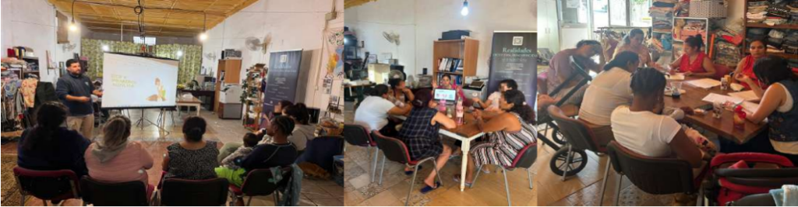
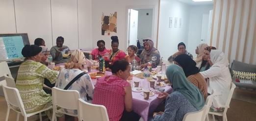
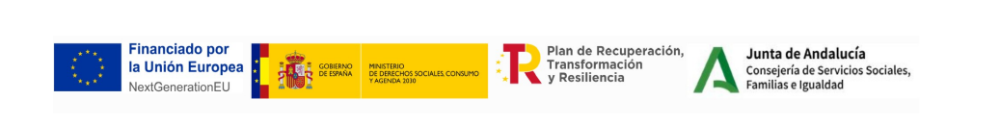

*APERFOSA impulsa la inclusión, el bienestar y la participación de 100 niños, niñas y jóvenes a través del proyecto “Conectando Viudas”*
Durante el año 2025, APERFOSA desarrolló el proyecto “Conectando Viudas: Ocio, Inclusión y Desarrollo para la Infancia y Juventud”, una iniciativa dirigida principalmente a hijos e hijas de mujeres en situación de vulnerabilidad, personas migrantes, víctimas de trata, explotación sexual o violencia de género, así como a menores y jóvenes con dificultades de acceso a recursos educativos, comunitarios y de ocio saludable.
A lo largo de su ejecución, el proyecto contó con la participación de 100 personas beneficiarias de entre 6 y 25 años, procedentes de diversos contextos sociales y culturales, promoviendo espacios de encuentro, aprendizaje, convivencia e inclusión.
Entre las actuaciones desarrolladas destacaron los programas de ocio educativo y tiempo libre, actividades culturales y participativas, talleres de creatividad y reciclaje, juegos cooperativos, iniciativas de participación juvenil y espacios de apoyo emocional. Asimismo, se llevaron a cabo acciones de educación digital y prevención de riesgos asociados al uso de las redes sociales, junto con actividades orientadas a favorecer la convivencia intercultural, la igualdad, la prevención de la violencia y el desarrollo de habilidades sociales y emocionales.
Uno de los aspectos centrales del proyecto fue el fomento de la participación activa de la infancia y la juventud. Para ello, se impulsaron dinámicas de corresponsabilidad, actividades comunitarias y espacios de reflexión y evaluación participativa, facilitando que las propias personas participantes pudieran realizar aportaciones al diseño y desarrollo de las actividades.
De manera complementaria, se desarrollaron actuaciones destinadas a fortalecer la autoestima, la gestión emocional, la resolución pacífica de conflictos, la convivencia, la inclusión social y el respeto a la diversidad cultural, contribuyendo al desarrollo integral de los niños, niñas y jóvenes participantes.
Los resultados obtenidos reflejan el alcance de la intervención. 80 jóvenes participaron en actividades educativas y recreativas durante los periodos vacacionales; 68 personas participaron en acciones de sensibilización sobre ciberseguridad y redes sociales; otras 68 participaron en espacios de reflexión sobre el impacto de las redes sociales; y 60 jóvenes formaron parte de actividades relacionadas con la inclusión y la diversidad cultural. Estas actuaciones permitieron, además, reforzar las competencias personales, emocionales y sociales de la población beneficiaria.
Con este proyecto, APERFOSA reafirma su compromiso con la infancia y la juventud en situación de vulnerabilidad, promoviendo espacios seguros, inclusivos y participativos que favorecen la igualdad de oportunidades, la cohesión social, la prevención de situaciones de exclusión y el fortalecimiento de la participación comunitaria
Este proyecto y todas sus actuaciones han sido financiadas por la Unión Europea-
NextGenerationEU con cargo al Mecanismo de Recuperación y Resiliencia y el Plan de Recuperación,
Transformación y Resiliencia y desarrolladas por APERFOSA, con la finalidad de la dotación de espacios de ocio seguros para la infancia, la adolescencia y la juventud en Andalucía. Anualidad 2025


